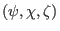

Next, we discuss a new poloidal angle often used in the tearing mode theory,
which is defined by
Then it is ready to verify that the Jacobian of

coordinates is equal to that of
 coordinates [proof:
]. The
component of
coordinates [proof:
]. The
component of
 along
direction (a covariant
component) is written
along
direction (a covariant
component) is written
At the resonant surface  , Eq. (262) implies
. On the other hand, the covariant component of
in
, Eq. (262) implies
. On the other hand, the covariant component of
in  direction is written
direction is written
Using (263), equation (262) is written
In the cylindrical limit,
 is a constant independent of the
poloidal angle. Then Eq. (263) indicates that
is also
a constant on a magnetic surface.
is a constant independent of the
poloidal angle. Then Eq. (263) indicates that
is also
a constant on a magnetic surface.
yj
2018-03-09